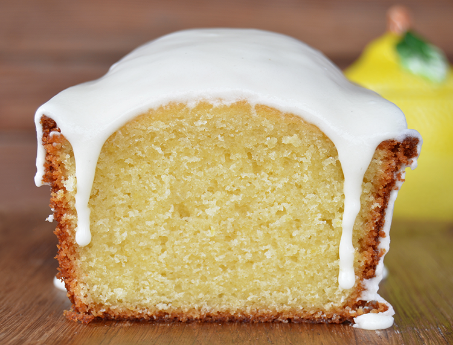

COSTILLITAS DE CERDO EN SALSA CREMOSA DE MORITA
Ingredientes:
Receta:
- 100 g de manteca a temperatura ambiente (mantequilla)
- 2 huevos a temperatura ambiente
- 1 taza de azúcar
- 2 tazas de harina 0000 (harina de repostería)
- 1 cuchara de té colmada de polvo de hornear (leudante químico)
- Ralladura de 2 limones
- 50 cc de limón (1 aproximadamente)
- 150 cc de leche
- Prender el horno en 170°.
- En un bowl grande batir los huevos con el azúcar hasta homogeneizar.
- En un vaso aparte juntar la leche con el jugo de limón y mezclar
para que se corte y forme el buttermilk. Incorporar la mitad a la mezcla de huevos.
- Agregar la mitad de la harina, el polvo de hornear y unir.
- Terminar incorporando el resto de mezcla de leche y limón, y por último el resto de la harina.
- Enmantecar y enharinar un molde de budín mediano. Volcar la mezcla y llevar al horno. Cocinar por aproximadamente
40 minutos hasta que esté dorado y al pinchar con un palillo salga limpio.
